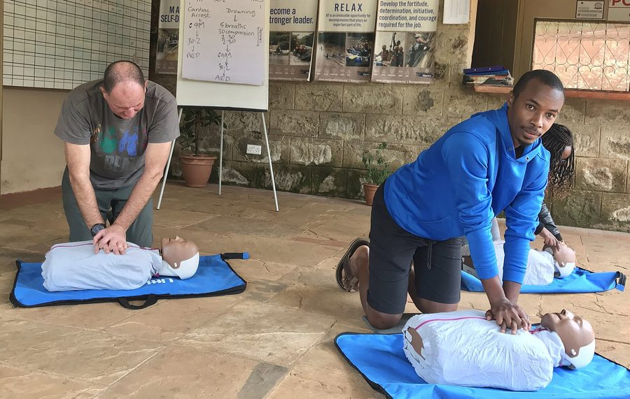
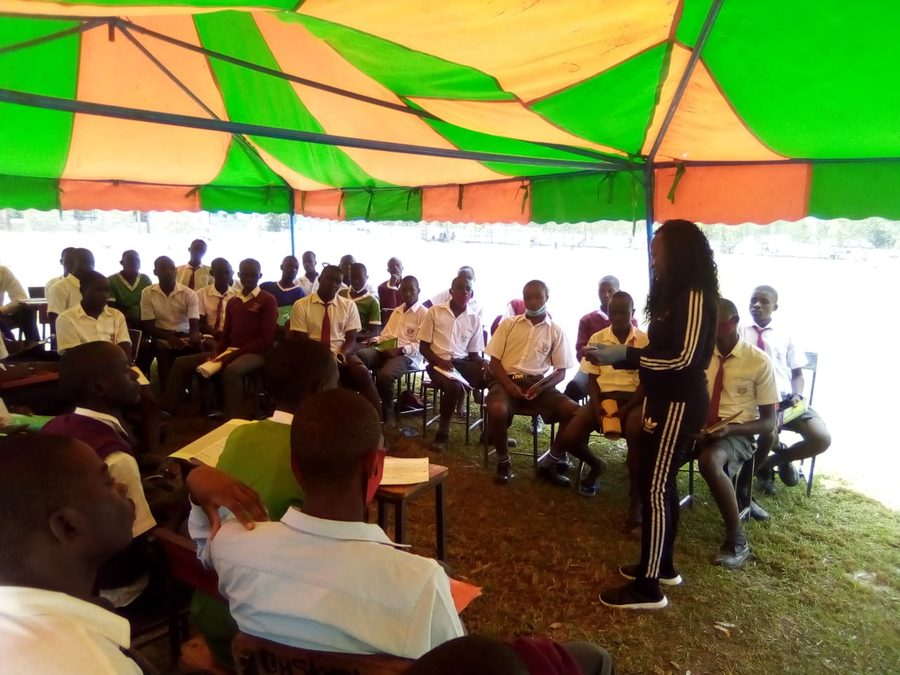
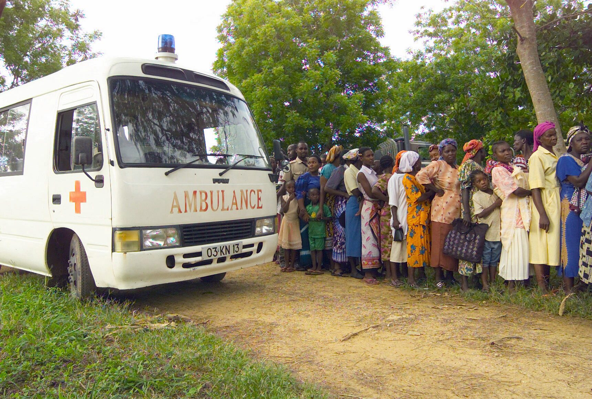
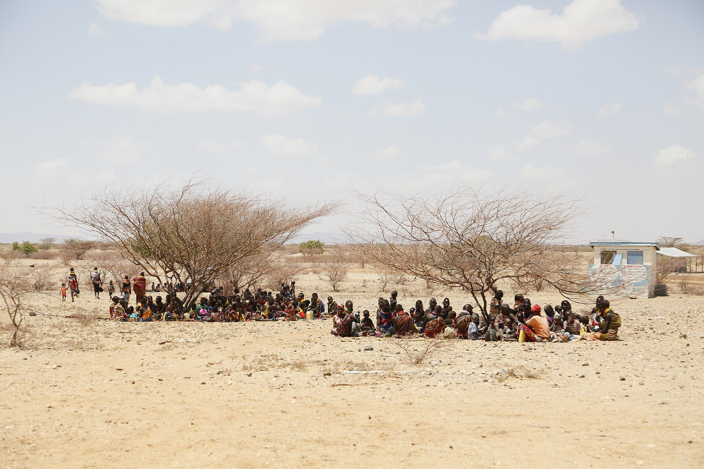

Health & safety8 places
Your time can change a life
Join Kenya Red Cross volunteers turning compassion into action—before, during, and after emergencies in communities across the country.
One humanitarian family
serving communities across Kenya
Our humanitarian commitment
HumanityImpartialityVoluntary serviceUnityFind your place
Bring your skills, energy, or willingness to help. Explore Kenya Red Cross roles that fit your county, interests, and availability.
View all opportunities

Community
Emergency responseSupport Kenya Red Cross response teams before, during, and after emergencies.
→Start your journey
You do not need to have everything figured out. Kenya Red Cross will guide you from registration to your first opportunity.
Start your applicationTell us about yourself, your interests, and when you are available.
Discover roles matched to your location, skills, and causes you care about.
Get the guidance you need and serve alongside a supportive local team.
Our collective impact
counties connected
humanitarian readiness
humanitarian family
can make a difference

Volunteer stories
“I joined to give a few hours. I found a community—and a purpose I carry with me every day.”
Ready when you are
Whatever your experience, there is a meaningful way to serve through Kenya Red Cross.
Become a volunteer